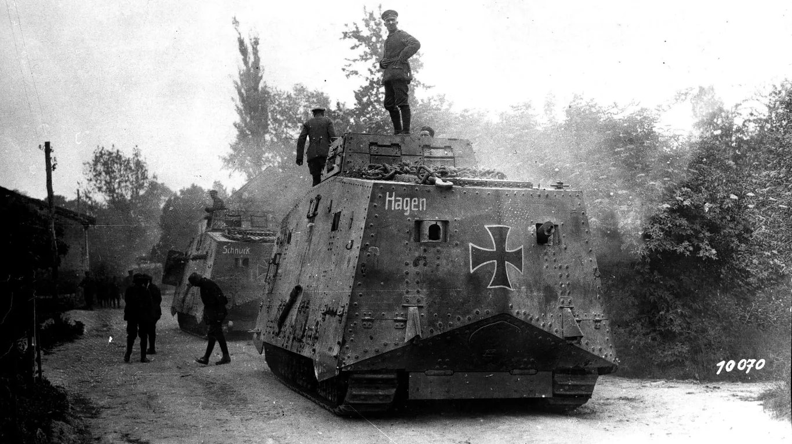
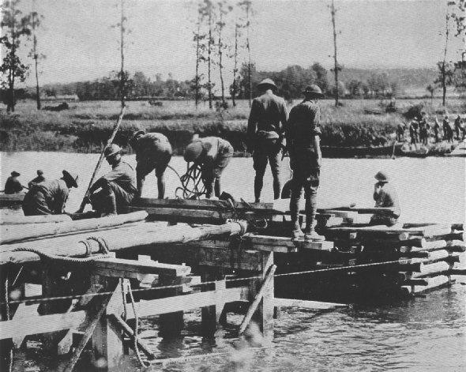
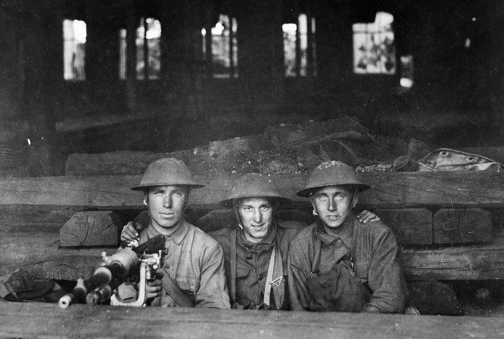
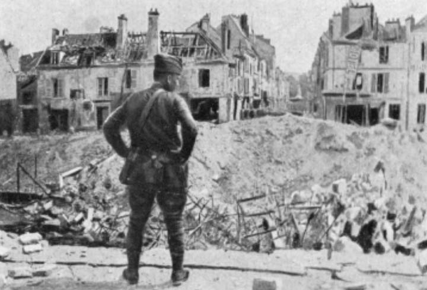
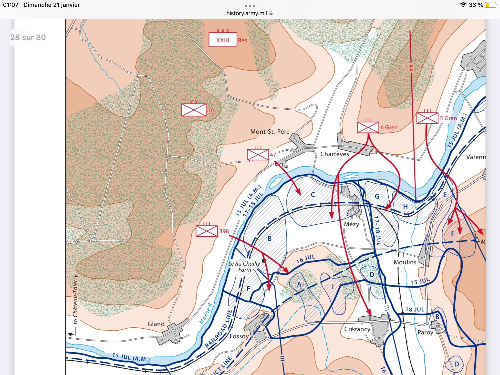

Les thématiques du site

01
La position stratégique de Jaulgonne
Le coude de la Marne, le confluent du Surmelin, la Ferme des Franquets et la Forêt de Ris : pourquoi Jaulgonne était le dernier verrou avant Paris.
Carte interactive · Géographie

02
Les événements — Été 1918
Des bombardements massifs du 15 juillet aux passerelles flottantes, de la nuit des gaz à la reprise rue par rue : la chronologie complète des six semaines qui ont changé la guerre.
Chronologie · 6 chapitres

03
La Libération de Jaulgonne
21–24 juillet 1918 : les passerelles du génie, le franchissement de la Marne, l'entrée du 38e Régiment US dans le village. Du premier coup de main à la libération définitive.
21–24 juillet · 38e Rgt US · Mondésir

04
Le Charmel & la Forêt de Ris
La difficile bataille dans les bois au nord de Jaulgonne : la prise du Charmel, le Bois Meunière, et la relève des unités épuisées. Sources primaires françaises et américaines.
Combat de forêt · Sources primaires

05
L'ampleur de la bataille
La 2e Bataille de la Marne vue depuis l'ensemble du front : 24 divisions alliées, 350 chars, 200 villages libérés, 35 000 prisonniers. Le tournant définitif de la Grande Guerre.
Contexte général · En enrichissement

06
Hommage à la Division Américaine
Les « Rochers de la Marne » — 3e Division US, 38e Régiment d'Infanterie. Les soldats noirs américains à Jaulgonne, Franquets Farm et Château-Thierry. Leur rôle décisif, leurs sacrifices.
Rock of the Marne · Buffalo Soldiers

07
Archives photographiques
68 documents d'archives sélectionnés : photographies de soldats, vues aériennes, cartes tactiques, ruines de Jaulgonne, mémoriaux. Sources primaires annotées.
68 documents · Galerie annotée

08
Carte animée de la bataille
La progression des lignes de front en 9 étapes, du 14 juillet au 3 août 1918. Têtes de pont, unités engagées, libération de Jaulgonne — sur fond topographique interactif.
Carte Leaflet · 9 étapes animées

09
Les lieux de mémoire
Dormans, Château-Thierry, Bois Belleau — les mémoriaux qui perpétuent le souvenir des combattants français, américains et de leurs alliés dans la vallée de la Marne.
Dormans · Château-Thierry · Belleau Wood